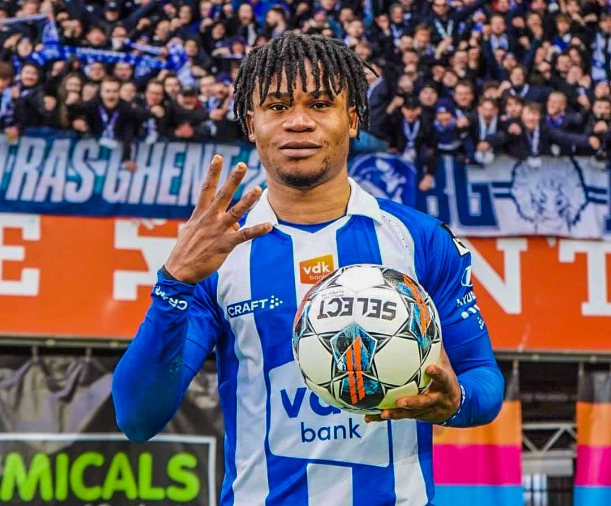
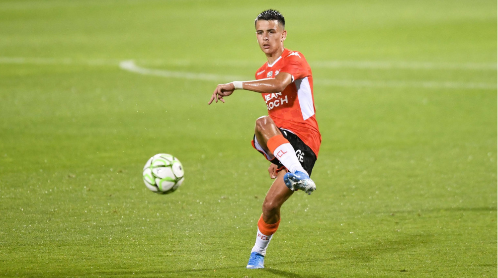

Young talents to look out for

Gift Orban is a 21 year old Nigerian who plays for Gent as a striker. In 23 games he has scored 21 goals.
He is a powerful forward and is lethal in front of the goal.
Vitor Roque is a 18 year old Brazilian who plays for Atletico Paranaense but he will join FC Barcelona in the
January transfer window. He is a powerful forward who can play as a striker and as a left winger

Enzo Le Fee is a 23 year old French midfielder who recently joined Stade Rennes. He is a silky smooth dribbler who
is press resistant. Last season for his former club Lorient he was excellent and was pivotal in their campaign.

Valentin Barco is a 19 year old Argentinian wonderkid who plays for Boca Juniors. He is a left back and has already
impressed a lot of European clubs. It is reported that Juventus are interested in him.